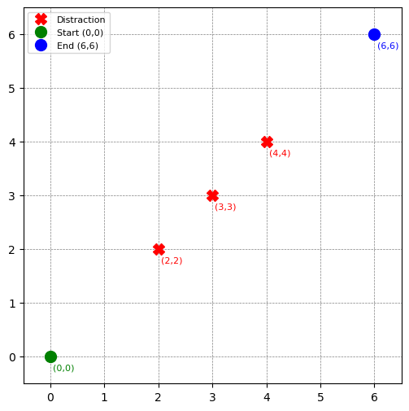
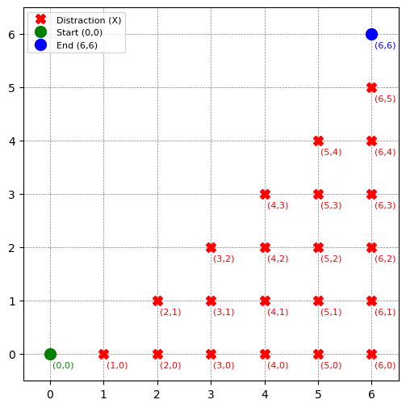

📚 The Focus Challenge
Alexia (a student at KU) wants to travel from their dorm at grid position (0,0) to the coffee cart at (6,6). She can move only east or north in unit increments. Three distractions block her path:
-
📍(2,2) Mandatory rock-paper-scissors arena 🖐️
"Best 3 out of 5 wins required to pass!"
-
📍(3,3) Philosophy TA offering "existential direction counseling" 🤯
"Is NORTH merely a social construct? Discuss."
-
📍(4,4) Mandatory gummy roulette booth 🎰
Spin the wheel to receive a gummy bear - 90% tropical fruit, 10% toothpaste-flavor.
Calculate the number of viable paths where Alexia:
- a) Avoids all distractions
- b) Avoids at least two distractions
Bonus Challenge:
c) The distractions have relocated! Every coordinate below the diagonal connecting (0,0) to (6,6) now contains a distraction:
📍(x,y) where x > y
How many paths avoid all these new distractions while moving only east/north?

Figure 1: Grid with distractions at (2,2), (3,3), and (4,4).

Figure 2: Grid with distractions below the diagonal (x > y).